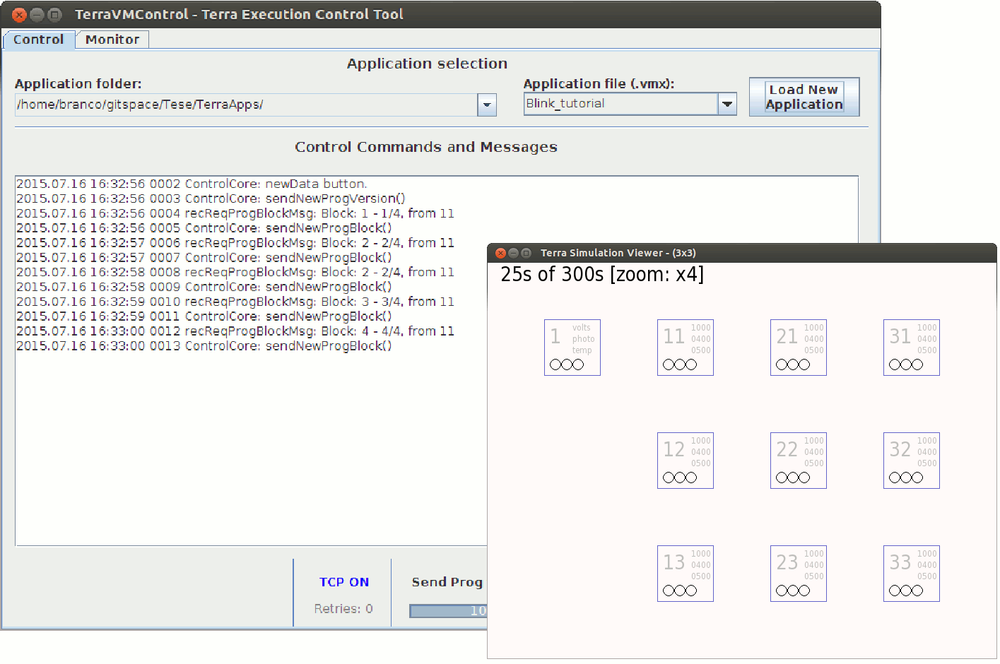
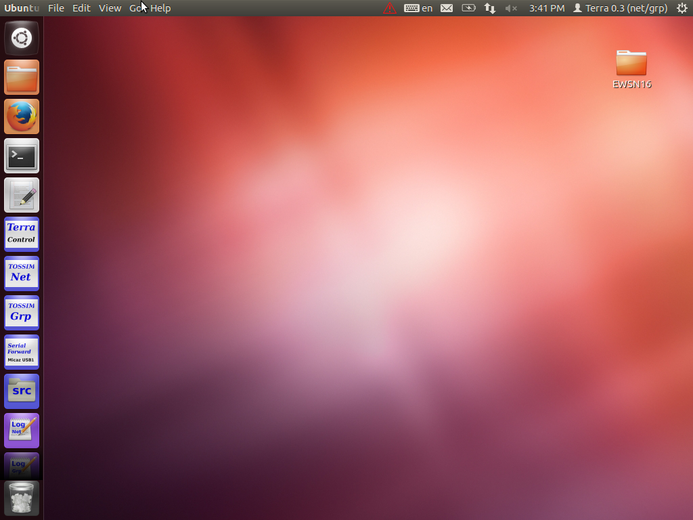

The Terra development procedure is based on three main tools.
The Céu-T compiler that compiles a Céu-T script to the bytecode format of VM-T.
A interative TerraControl Tool to start the script dissemination (load a script) in the network.
A specific customization of VM-T. The VM-T runtime must be pre-loaded in all network nodes. In practice, we can load the runtime on physical nodes or use a simulator.
In addition we built a graph viewer for the TOSSIM simulator.
Figure 1 presents the interface of TerraTool and the graph viewer for the simulator.

Fig1.: TerraTool and the simulator grapical view.
2 - Pre-built linux environment
To facilitate the use of Terra we built a Linux environment which includes features that speed up the use of Terra. See the Download section to download and install a virtual machine with this enviroment.
This environment includes following resources:
All necessary software to execute Terra, including TinyOS enviroment, TinyOS Tools, and some other tools.
A text editor (gedit) configured to edit the Céu-T programs. The F5 key runs the Céu-T compiler for the currently edited script.
A menu icon to start the Terra Control tool.
Two pre-configured TOSSIM simulators, one for TerraNet and another for TerraGrp. These pre-configured simulators are prepared to use a grid disposition where the user defines the number of lines and columns. Each radio ranges up to one hop of their neighbors. These simulator are started from the TOSSIM Net and TOSSIM Grp menu icons.
A menu icon to start the TinyOS SerialForward tool. Use it in the case to connect to a remote node via USB or ethernet
Obs: Some menu icons has more options when selected with right button.
Figure 2 presents the desktop window of our customized Linux environment.

Fig2.: Terra Linux environment desktop.
{% include footer.html %}